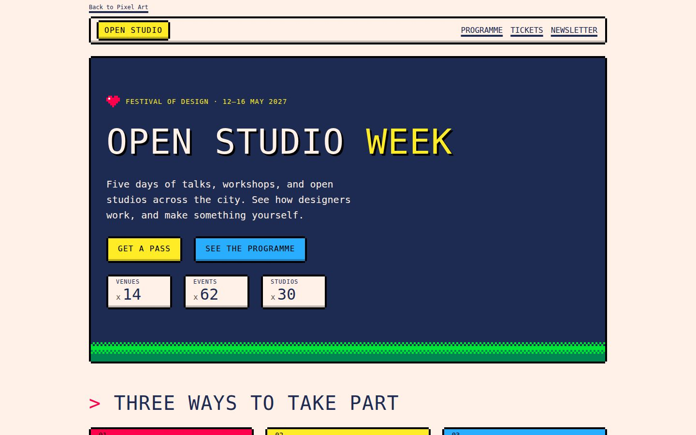

Styles / 35
Pixel Art
Pictures and interfaces built from visible square pixels in a small palette, after the graphics of 8-bit and 16-bit computers, arcade machines, and game consoles. This record covers that core look in interfaces and graphics.
Playful / Nostalgic / Crisp / Game-like / Handmade
Visual grammar
- One pixel unit. Every size, gap, outline, and step is a whole multiple of one enlarged pixel, often 4 px on screen.
- Stepped edges. Frames are drawn pixel by pixel: hard outlines with notched corners and one-step bevels. No anti-aliasing, blur, or gloss.
- Bitmap letters. Monospaced or bitmap pixel faces in one weight, often in capitals, for headings, labels, and counters.
- Small fixed palette. About 8 to 16 saturated, hardware-like colors with black and a light ground. Shading is in flat palette steps or checkerboard dithering, not gradients.
- Sprites and tiles. Small characters, items, and icons drawn at low resolution and enlarged by whole numbers, so each pixel stays square. Tiled ground and sky strips.
- Game screens. Title screens, menu windows, dialogue boxes, score counters, and status bars organize the page.
- Frame by frame. Animation steps between a few frames, such as a blinking cursor or a two-frame sprite, with no easing.
What connects the references
This collection has no references yet. The grammar comes from the attested sources and the specimen, and it is provisional until references are collected and measured.
The record is scoped to the 8-bit and 16-bit core. Isometric pixel art (Wikipedia names Habbo Hotel and eBoy), pixel dolls, photorealistic demoscene work with anti-aliasing, and high-definition hybrids that mix pixel sprites with smooth effects are related branches.
Identity
- Name
- Established movement name
- Also called
- Dot art, Pixel pushing, 8-bit and 16-bit graphics
- Era
- 1978–present. The core look comes from arcade games such as Space Invaders (1978) and the 8-bit and 16-bit consoles and home computers of the 1980s and 1990s. The term was first published in 1982. Independent games revived it from the 2010s, and it is still in use.
- Regions
- Japan, United States, Europe
- Wikidata
- Q811179
- Name used by
- Wikipedia: Pixel art. Defines the form, ties it to 8-bit and 16-bit era graphics, and dates the first published use of the term to Goldberg and Flegal, Xerox PARC, 1982., Wikidata Q811179: pixel art, an instance of art genre and a subclass of digital art., Wikipedia: Susan Kare. Calls her a pioneer of pixel art and of the graphical computer interface, for the first Apple Macintosh (1983–1986)., NES.css on GitHub: a "NES-style CSS Framework" for web interfaces, MIT license, created 2018.
Lineage
- Influenced by Video game art. Wikipedia says pixel art as it is known today largely originates from the golden age of arcade video games and 8-bit consoles such as the Nintendo Entertainment System (1983).
- Related to Mosaic. Wikipedia names mosaic, cross-stitch, and beadwork as non-digital counterparts that build pictures from small colored units.
- Related to Cross-stitch. Wikipedia names counted-thread embroidery, including cross-stitch, as a possible predecessor.
- Related to Demoscene. Wikipedia describes demoscene graphicians publishing pixel art in demos from the late 1980s and holding pixel graphics competitions in the 1990s.
- Related to Synthwave. Wikipedia says synthwave artists used pixel art for music videos in the 2010s, for example for Perturbator and Gunship.
References
15 reviewed · 15 agent-proposed
- 01Website / Observed / Agent-proposed
Agora Road’s Macintosh Cafe portal
Partial fit: a pixel-font menu bar, pixel icons, and a dithered pixel figure, inside a vaporwave collage.
- 02Editorial / Observed / Agent-proposed
Design Quarterly 133: “Does It Make Sense?”
Partial fit: the early Macintosh bitmap self-portrait shows visible square pixels, but the layout is New Wave.
- 03Editorial / Documented / Agent-proposed
“ACM President’s Letter: Pixel Art” (Goldberg and Flegal, 1982)
The source of the style’s name, which the style record cites for the date of the term.
- 04Illustration / Observed / Agent-proposed
DawnLike 16 × 16 roguelike tileset
Hand-placed square pixels on a fixed tile grid, a 16-color palette, flat palette-step shading, and sprites with dark outlines.
- 05Software / Observed / Agent-proposed
Hotline Miami
Clear: top-down pixel-art sprites and rooms on one coarse grid, in a neon palette.
- 06Illustration / Observed / Agent-proposed
Käpt’n Börgers Piratennest (PixelPlaza)
Partial fit: hand-placed pixels at a fixed scale with tiny figures, but in the isometric branch that the style record lists as related, with many more colors than the 8-bit core.
- 07Illustration / Observed / Agent-proposed
Kenney 1-Bit Pack
A complete low-resolution sprite and tile vocabulary: whole-pixel shapes on a 16-pixel grid, an 8-color palette, a bitmap alphabet, and game items such as hearts, keys, coins, and cards.
- 08Illustration / Observed / Agent-proposed
Liberated Pixel Cup base assets
Partial fit: hand-drawn sprites and tiles with hard dark outlines and flat palette-step shading, but drawn at a finer 32-pixel scale with more colors than the 8-bit core, closer to 16-bit console art.
- 09Software / Observed / Agent-proposed
Mindustry
Partial fit: tiles, sprites, menus, and type are all whole-pixel art with flat colors, but translucent smooth circles for turret ranges and thin laser lines lie over the map.
- 10Software / Observed / Agent-proposed
Pixel Dungeon
Partial fit: sprites, tiles, bitmap type, and stepped interface frames are all pixel art, but a smooth dark vignette of light and shadow covers the map.
- 11Typeface / Observed / Agent-proposed
Press Start 2P typeface
A canonical bitmap face for the style: every glyph is drawn on an 8 × 8 pixel cell with square steps, after arcade game fonts.
- 12Typeface / Observed / Agent-proposed
Silkscreen typeface
A bitmap face built on a 5-pixel cap height for screen labels: square steps, one weight, and capitals only.
- 13Software / Documented / Agent-proposed
Space Invaders
A founding work of the style: hand-drawn bitmap sprites with two-frame animation, which the style record names as the start of its era.
- 14Operating system / Documented / Agent-proposed
Susan Kare’s icons and bitmap fonts for the Macintosh
The canonical pixel interface: one-bit icons and bitmap type drawn by hand on small square grids. The style record cites Kare as a pioneer of pixel art.
- 15Software / Observed / Agent-proposed
VA-11 Hall-A: Cyberpunk Bartender Action
Clear: the whole game is drawn in coarse pixel art, with framed dialogue panels and bitmap-style type.
Classification rubric
The test for a new reference
Identifies the style
- Square pixels are visible and placed by hand: curves and diagonals step like staircases.
- Colors come from a small fixed palette. Shading is in flat steps or checkerboard dithering.
- Frames and buttons have hard pixel outlines with notched corners or one-pixel bevels.
- Headings and labels use a bitmap or monospaced pixel face, often in capitals.
- Sprites, tiles, and game furniture appear: dialogue boxes, menu cursors, hearts, coins, score counters.
Rules it out
- Smooth anti-aliased curves, blur, glows, or smooth gradients on the main surfaces.
- Pixels enlarged by uneven factors, so they look blurred or have different sizes.
- Rounded corners and capsule shapes.
- A photograph run through a pixelate filter, with no deliberate placement of pixels.
Often confused with
- Minimalist Machine
- Minimalist Machine is quiet and neutral: thin 1 px rules, sans-serif headings, and at most one signal color. Pixel art uses chunky stepped frames, bitmap type throughout, several saturated palette colors, and sprites.
- Y2K aesthetic
- Y2K is chrome, silver, translucent candy plastic, glows, and rounded capsules with smooth gradients. Pixel art has no gradients or glows: shading is flat palette steps and dithering, and corners are square or stepped.
- Vaporwave
- Vaporwave quotes high-resolution 1990s desktop windows with 1 px bevels, pastel pink and purple, Greek statues, and collage. It can put pixel images inside the collage. Pixel art draws the whole surface on one coarse pixel grid, with bitmap type and saturated game palettes.
- Neo-brutalism
- Neo-brutalism uses smooth thick black outlines, offset block shadows, and large sans-serif type. Pixel art outlines step at the corners, the type is bitmap, and the page adds sprites and dithering.
- Glitch art
- Glitch art shows corrupted or broken digital images: smeared rows, shifted channels, noise. Pixel art places clean pixels on purpose on a stable grid.
- ASCII art
- ASCII art builds pictures from text characters. Pixel art builds them from colored square pixels.
- Voxel art
- Voxel art builds three-dimensional models from cubes, usually rendered with smooth lighting. Pixel art is flat and two-dimensional.
Ideas to carry forward
- Choose one pixel unit, for example 4 px, and make every size, outline, and gap a whole multiple of it.
- Limit the palette to about 8 to 16 colors. Shade with palette steps or checkerboard dithering.
- Draw frames with hard, unblurred outlines and notched corners. Give buttons a one-unit bevel that moves when pressed.
- Enlarge pixel images by whole numbers and set image-rendering: pixelated.
- Use a bitmap or monospaced face for headings and labels. Keep body text at a readable size and line length.
- Animate in steps, and stop the animation when the user asks for reduced motion.
Keep the function
- Do not blur, smooth, or anti-alias edges, shadows, or enlarged sprites.
- Do not use smooth gradients, glows, or rounded corners.
- Do not set long body text in a small pixel font.
- Do not mix pixel sizes in one view. A sprite drawn with 2 px pixels next to one drawn with 8 px pixels breaks the grid.
- Do not run a photograph through a pixelate filter and call it pixel art.
Useful directions: independent game sites, press kits, and game jams, gaming events and esports microsites, hobby software, developer side projects, and command-line tool sites with a playful tone, chiptune music, retro computing, and demoscene pages, achievement badges, progress bars, and other game-like interface details.
Poor fits:
- Long-form reading such as documentation or news. Bitmap type tires readers over long text.
- Healthcare, finance, and legal services. The style reads as a game, not as calm and serious.
- Luxury and premium brands. The coarse grid reads as cheap or nostalgic.
- Dashboards with fine charts and dense data. The coarse pixel unit cannot show fine detail.
Implement
For agents and developers

Files
- Specimen page: the standard content in this style.
- tokens.json: design tokens in the Design Tokens Community Group format.
- tokens.css: CSS custom properties.
- tailwind.css: a Tailwind CSS v4
@themeblock. - shadcn.css and registry-item.json: shadcn/ui theme variables and a
registry:themeitem. - DESIGN.md: tokens and rules in the DESIGN.md format.
- api/styles/pixel-art.json: this whole record for agents.
Measured fingerprint
| Metric | Range | Why |
|---|---|---|
type.monoShare | at least 0.6 | Bitmap or monospaced type carries most text, not only labels. The specimen measures 1; no other specimen measures more than 0.3. Provisional: set from the specimen, recalibrate with measured references. Sites that load a pixel webfont without a monospace fallback in the stack measure 0 here. |
surface.shadow.share | at least 0.4 | Most windows, buttons, and fields carry a stepped pixel frame. The specimen draws the frames with hard shadows and measures 0.66. Provisional: set from the specimen, recalibrate with measured references. |
surface.shadow.hardShare | at least 0.9 | Stepped outlines and bevels are drawn with unblurred shadows, not glows. The specimen measures 1. Provisional: set from the specimen, recalibrate with measured references. |
surface.shadow.medianOffset | 2 to 6 | Outlines step by one enlarged pixel, 2 to 6 px on screen. Not the 8 px or larger blocks of offset-shadow styles. The specimen measures 4. Provisional: set from the specimen, recalibrate with measured references. |
color.patternShare | at least 0.1 | A tiled or dithered strip covers part of the page. The specimen measures 0.25. Provisional: set from the specimen, recalibrate with measured references. Sites that draw tiles as images measure 0 here. |
color.gradientShare | at most 0.02 | Shading is in flat steps or dithering, never smooth gradients. The specimen measures 0. Provisional: set from the specimen, recalibrate with measured references. |
surface.radius.median | at most 1 | Corners are square or stepped, never rounded. The specimen measures 0. Provisional: set from the specimen, recalibrate with measured references. |
The ranges are initial hypotheses until measured references calibrate them. Check a capture with node tools/lint-style.mjs pixel-art <measurement.json>.